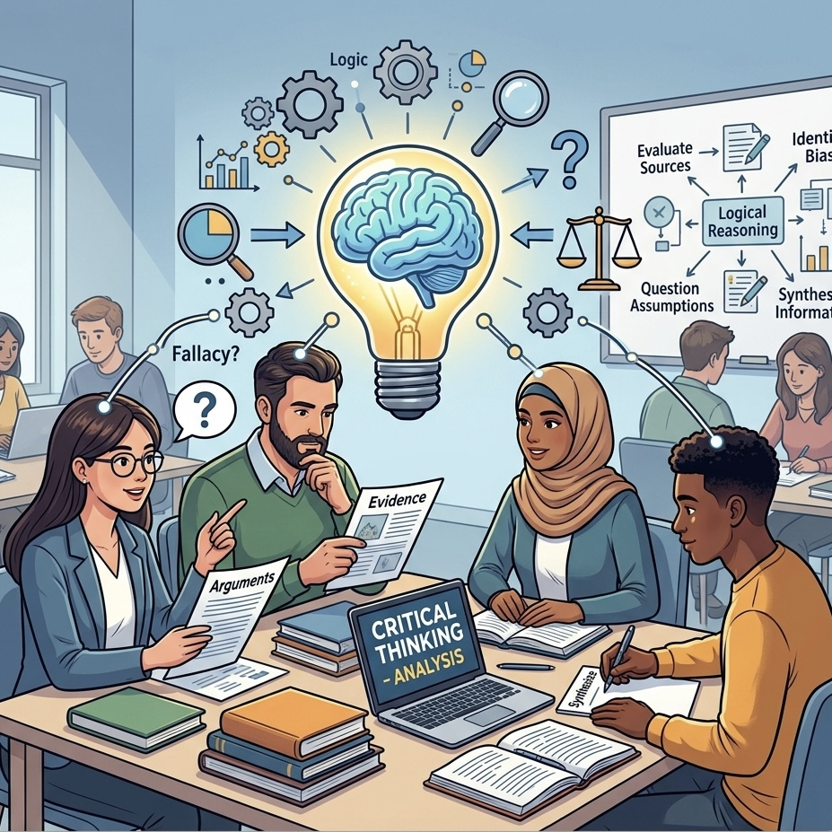

Introduction
About the Graduate Institute of Journalism, National Taiwan University

Professional journalists have to include both journalism training and the ability to analyze news issues; also, in face of the ever and fast changing and diverse society and globalized environment, news workers should possess independent thinking, respect multicultural civic awareness, international outlook and professional knowledge.
We concentrate on the courses and research plans surrounding the integration of theory and practices, and the main practical concept of 'learning by doing'. We are greatly different from other journalism institutes in Taiwan, our goal is to cultivate advanced practical talents and enhance professionalism.
Although the scale of the institute is small, we vigorously integrate resources from within and outside of NTU. We allow our students to take classes outside of NTU, for we have signed a program with other schools to let students choose electives there; from NTU, we encourage our students to make good use of NTU's abundant academic resources and brilliant teachers. With the aid from NTU's scientific, engineering, medical, law, commercial and agricultural academic environment, to fulfill our utmost value on practical education.
At the same time, we actively search for widespread practitioners from newspapers, magazine, TV, and internet, accomplishing the employment of the remarkable tradition of "learning by doing".
In recent years, we have made efforts to develop international exchange, inviting oversea scholars to visit and holding workshops; we send our students abroad to take part in international exchange, also plan to take an extra step in creating closer partnerships with other international universities.
We continue to improve teaching, for example, most required courses have all changed to small class teaching. In line with the four main goals, we developed 5 extended elective courses, including theory/method, media citizenship, international outlook, field expertise, and professional practices. For years, we have changed in accordance with the transitions of news communication, continuously developed new professional courses, and extended theory and method courses and kept on collaborating with other related institutes and departments in NTU, expanded field expertise courses and introduced new courses that join journalism with other related areas.
News
Latest news and events from the Graduate Institute of Journalism
Faculty
Our faculty combine academic scholarship with deep professional expertise in journalism and communication.
Visiting Scholars
Academics and researchers currently affiliated with the Graduate Institute of Journalism
Alexander Haentzschel


Alexander Haentzschel shared insights on German media landscape, transnational digital platforms, and regulation during his academic visit to the Graduate Institute of Journalism.
Visit Personal WebsiteMatthew Powers
Matthew Powers, Associate Professor at the Department of Communication, visited from November 25 to 29, 2024. He participated in a special interview on the role of journalists and the core values of news reporting in the AI era.
Visit Academic ProfileCurriculum
Academic programs and course offerings at the Graduate Institute of Journalism
The graduation credit requirement for the Institute is 33 credits. We offer two graduation tracks: Professional and Research. Students in both tracks are required to take courses related to journalism practice, reflecting the institute's emphasis on practical journalism skills.
Students are required to select courses offered by this Institute as a priority. If enrollment in Master's-level courses outside the Institute is necessary due to thesis research needs or special circumstances, approval from the Institute Director is required before credits can be counted toward graduation.
- Mass Communication Theory
- Media Law and Ethics
- Communication Research Methods
- Quantitative Research
- Reporting and Writing I
- Television News Reporting I
- News Editing and Information Design
- Reporting and Writing II
- Television News Reporting II
- In addition to required and elective courses, students must take at least two courses offered by this Institute.
- Students writing an in-depth reporting or multimedia in-depth reporting thesis must take Reporting and Writing I and Reporting and Writing II.
- Students writing a video in-depth reporting thesis must take Television News Reporting I and Television News Reporting II.
- Students with prior training in Reporting and Writing or Television News Reporting may apply for course exemption by submitting an application, supporting documents, and representative works for review by the course instructor. Supporting documents include: Proof of at least two years of relevant media work experience, or Official transcripts showing completion of at least two related courses (or equivalent).
- Mass Communication Theory
- Media Law and Ethics
- Communication Research Methods
- Quantitative Research
- Reporting and Writing I
- Television News Reporting I
- News Editing and Information Design
- Reporting and Writing II
- Television News Reporting II
- In addition to thesis courses, students must complete at least three theory-oriented courses offered by the Institute. These include courses categorized under Theory/Methods, Media and Citizenship, and International Perspectives.
- Students writing an in-depth reporting or multimedia in-depth reporting thesis must take Reporting and Writing I and Reporting and Writing II.
- Students writing a video in-depth reporting thesis must take Television News Reporting I and Television News Reporting II.
- Students with prior training in Reporting and Writing or Television News Reporting may apply for course exemption by submitting an application, supporting documents, and representative works for review by the course instructor. Supporting documents include: Proof of at least two years of relevant media work experience, or Official transcripts showing completion of at least two related courses (or equivalent).